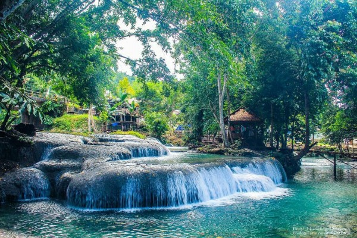

Kenali potensi setiap kampung, bangun informasi desa bersama-sama, dan wujudkan transparansi Kabupaten Fakfak — dari pesisir Teluk Patipi hingga pedalaman Bomberay.

Web kampung dikelola bersama antara pemerintah kabupaten dan masyarakat kampung, sehingga setiap potensi dan kebutuhan dapat tersampaikan dengan terbuka.
Kampung Anda berhak dikenal. Buat akun sekarang dan mulai isi informasi web kampung dalam hitungan menit.
Buat Akun GratisKabupaten Fakfak terdiri dari 17 distrik. Pilih salah satu distrik untuk melihat daftar kampungnya, atau cari langsung nama distrik maupun kampung di bawah ini.
Dikenal sebagai Kota Pala, Kabupaten Fakfak adalah tanah bersatunya wilayah pesisir dan pegunungan di Papua Barat. Melalui portal ini, seluruh distrik dan kampung dapat saling terhubung, berbagi informasi, dan membangun transparansi bersama menuju kesejahteraan warga.
Selengkapnya